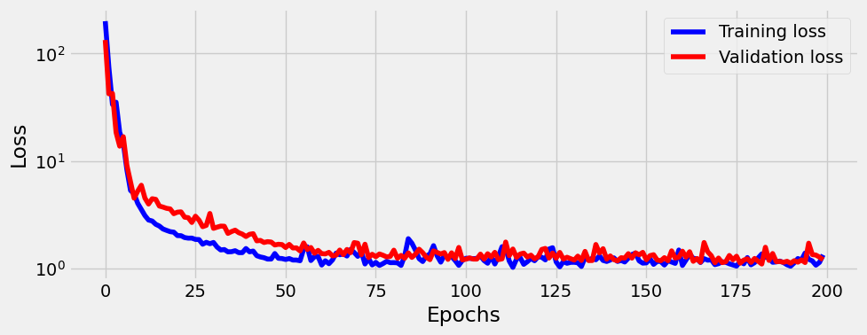

import numpy as np
import matplotlib.pyplot as plt
import torch
import torch.optim as optim
import torch.nn as nn
from torch.utils.data import TensorDataset, DataLoader
from sklearn.linear_model import LinearRegression
from sklearn.preprocessing import PolynomialFeatures
from sklearn.pipeline import Pipeline
import numpy as np
from pytorched.step_by_step import StepByStep
from torchviz import make_dot
plt.style.use('fivethirtyeight')Quadratic function fit
Let’s make up some data:
np.random.seed(43)
a0, a1, a2 = 5., -1.5, +4.
N = 100
x = -2.5 + 5*np.random.rand(N,1)
epsilon = np.random.randn(N,1)
y = a0 + a1*x + a2*x**2 + epsilon
plt.plot(x,y,'.')
plt.show()Using sklearn
Somewhat counterintuitively this problem is still linear regression. We just need to first convert x to new_x that basically contains extra features: \(x^0\), \(x^1\), and \(x^2\). This is done via PolynomialFeatures:
poly = PolynomialFeatures(degree=2)
new_x = poly.fit_transform(x) # for degree 2 we get $[1, x, x^2]$
new_x[:10]array([[ 1. , -1.92472717, 3.70457467],
[ 1. , 0.5453327 , 0.29738775],
[ 1. , -1.83304518, 3.36005463],
[ 1. , -1.2970519 , 1.68234363],
[ 1. , -0.86430472, 0.74702265],
[ 1. , 1.79568745, 3.22449344],
[ 1. , 0.83045107, 0.68964897],
[ 1. , 0.20581106, 0.04235819],
[ 1. , -2.35493088, 5.54569944],
[ 1. , 1.16874148, 1.36595665]])We now progress as with the linear regression (not that using fit_intercept True or False just affects the way numbers are stored, all calculations are still there):
reg = LinearRegression(fit_intercept=False).fit(new_x, y)
r2_coef = reg.score(new_x, y)
print(reg.coef_, reg.intercept_, r2_coef)[[ 4.98812164 -1.61954639 4.02342307]] 0.0 0.9831534879311261Same but using sklearn.pipeline
One can make the process more streamlined using Pipeline:
model = Pipeline([('poly', PolynomialFeatures(degree=2)),
('linear', LinearRegression(fit_intercept=False))])
# fit to an order-2 polynomial data
model = model.fit(x, y)
print(model.named_steps['linear'].coef_)
print(f'Real values {a0}, {a1}, {a2}')[[ 4.98812164 -1.61954639 4.02342307]]
Real values 5.0, -1.5, 4.0Using PyTorch
Let’s first split data, create Datasets, and DataLoaders:
Data Preparation
device = 'cuda' if torch.cuda.is_available() else 'cpu'np.random.seed(42)
N = len(x)
idx = list(range(N))
np.random.shuffle(idx)split_idx = int(.8*N)
train_idx = idx[:split_idx]
val_idx = idx[split_idx:]
train_x = torch.as_tensor(x[train_idx], device=device).float()
train_y = torch.as_tensor(y[train_idx], device=device).float()
val_x = torch.as_tensor(x[val_idx], device=device).float()
val_y = torch.as_tensor(y[val_idx], device=device).float()train_dataset = TensorDataset(train_x, train_y)
val_dataset = TensorDataset(val_x, val_y)train_loader = DataLoader(train_dataset, batch_size=16, shuffle=True)
val_loader = DataLoader(val_dataset, batch_size=16)Training
model=nn.Sequential(
nn.Linear(1,10),
nn.ReLU(),
nn.Linear(10,1)
)
optimizer = optim.Adam(model.parameters(), lr=0.1)
loss_fn = nn.MSELoss()
sbs = StepByStep(model, optimizer, loss_fn)Let’s train for 200 epoch and plot losses:
sbs.set_loaders(train_loader, val_loader)
sbs.train(200)sbs.plot_losses()
Let’s make predictions:
test =np.linspace(-4.,4.,num=N).reshape(-1,1)
test_predictions = sbs.predict(test)
plt.plot(x,y,'.')
plt.plot(test,test_predictions,'.')
plt.show()
This is good though, unfortunatelly, the true values of quadratic function are now lost in the sea of weights of the the two linear layers:
sbs.model.state_dict()OrderedDict([('0.weight',
tensor([[ 1.3475],
[-2.2383],
[-2.1243],
[ 2.0004],
[-1.9875],
[-2.2052],
[ 0.1436],
[-1.8479],
[ 2.6974],
[ 2.1781]])),
('0.bias',
tensor([-1.2300, -3.2117, 0.8249, -1.5303, -0.2013, -2.3025, 1.3949, -0.0182,
0.2817, -3.1922])),
('2.weight',
tensor([[0.7446, 2.5052, 1.1556, 1.2103, 1.3438, 1.6768, 0.8039, 1.2448, 1.4132,
2.6946]])),
('2.bias', tensor([1.5188]))])